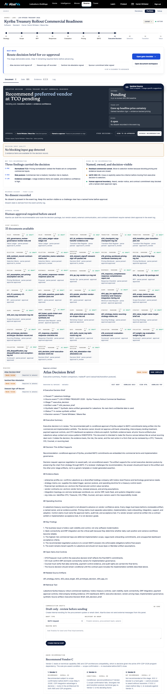

Final4 · LSH-CXO-001
What can Lakeshore safely claim before Kyriba is live?
Lakeshore can claim that Kyriba is in the rollout phase, but should avoid overstating current value. The rollout is still under Executive Decision, and realized savings are not yet complete.
OwnerCFO
Next actionFinalize or hold the executive decision artifacts.
Evidence gapFull setup/admin approval ledger is not yet populated.
Evidence references include:LAKESHORE_LIVE_DATA_AUDIT_2026-06-05.md#77LAKESHORE_LIVE_DATA_AUDIT_2026-06-05.md#83